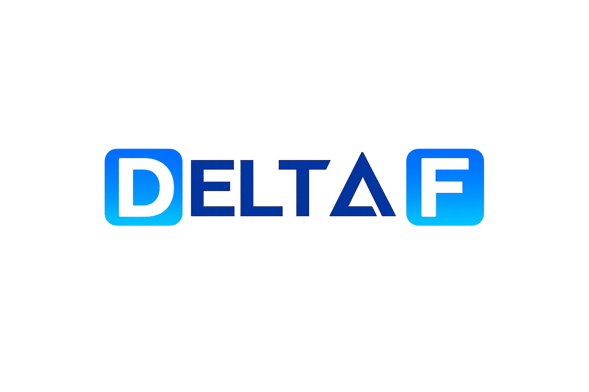
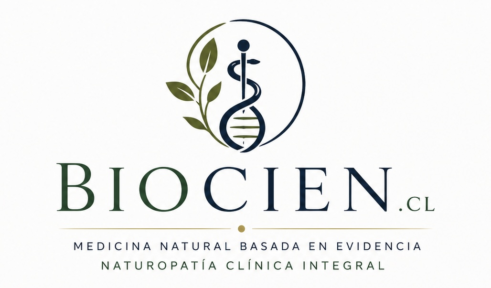
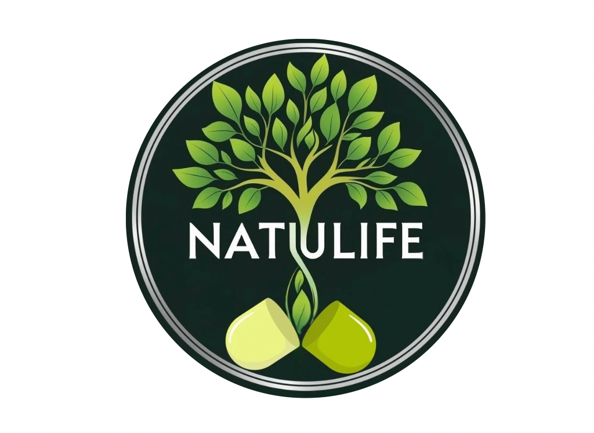

Formación avanzada para profesionales de la salud
Diplomados, cursos y programas académicos con enfoque clínico, científico y humano para profesionales que buscan crecer y aportar a la salud.
Conoce nuestros programas Sé parte de Delta
Diplomados, cursos y programas académicos con enfoque clínico, científico y humano para profesionales que buscan crecer y aportar a la salud.
Conoce nuestros programas Sé parte de Delta
Programas diseñados con estándares de calidad y enfoque científico.
Formación aplicada a las necesidades actuales de la salud.
Una comunidad académica con visión global.
Profesionales unidos por la ciencia y la humanidad.

Programas de profundización y formación avanzada.

Capacitación continua para profesionales de salud.
Trayectorias formativas con enfoque profesional.
Promoción del conocimiento aplicado en salud.
Accede a cursos y diplomados certificados para fortalecer tu desarrollo profesional.
Si eres profesional de la salud y deseas impartir formación, únete a nuestra comunidad docente.

Gestión clínica y soluciones profesionales.

Atención, ciencia y educación en salud.

Bienestar y productos naturales.